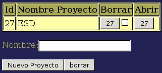
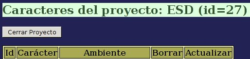
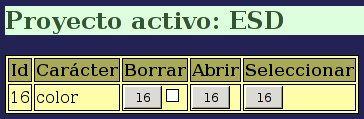
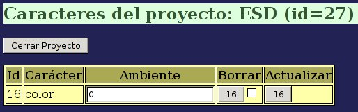

Para crear nuestro primer proyecto pulsamos sobre el botón “Proyectos” del menú principal. Nos aparecerá una tabla de proyectos vacía y un pequeño formulario para crear un proyecto nuevo. Elegimos un nombre para ese proyecto, por ejemplo: ESD, y pulsamos sobre el botón “Nuevo Proyecto”. Nuestro nuevo proyecto deberá entonces aparecer en la tabla:

Con esto solo hemos creado un proyecto vacío, deberemos abrirlo para poder trabajar en él. Al pulsar el botón “Abrir” veremos una tabla de caracteres asociados a este proyecto, que ahora estará vacía. En la parte superior se muestra el nombre y la Id del proyecto que se encuentra abierto.

Debemos ahora asociar el carácter color a este proyecto. Para ello pulsamos sobre el botón “Caracteres” del menú principal, y veremos que sobre la tabla de caracteres aparece el nombre del proyecto activo.

Pulsamos una sola vez el botón de la columna “Seleccionar” que muestra la Id del carácter color. Aparecerá un mensaje indicando que se ha insertado el carácter en el proyecto activo. De hecho, si volvemos al proyecto, veremos que en la tabla de caracteres asociados aparece ahora el carácter seleccionado.

En esta tabla de caracteres asociados al proyecto el campo “ambiente” es un valor que determina las variaciones que los cambios ambientales pueden llegar a producir en el fenotipo de los individuos. En nuestro caso pretendemos que el carácter color produzca flores de un color determinado de manera independiente a las condiciones ambientales, por lo que asignaremos el valor 0 a este campo, tras lo cual pulsaremos el botón de la columna “Actualizar” correspondiente a nuestro carácter. Este valor de ambiente puede modificarse en cualquier momento pulsando de nuevo en este botón.